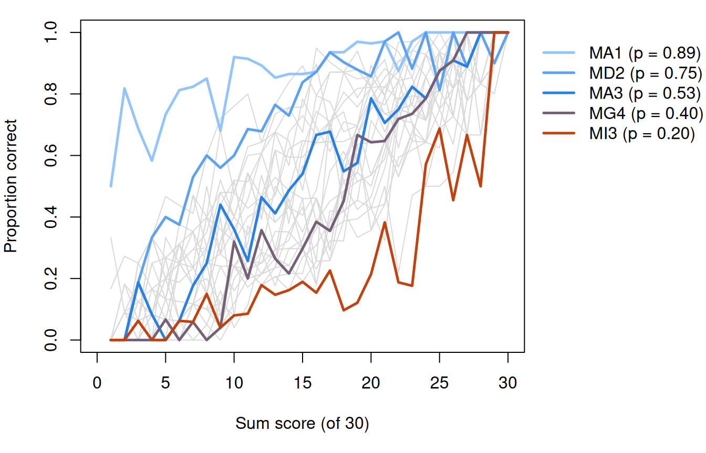
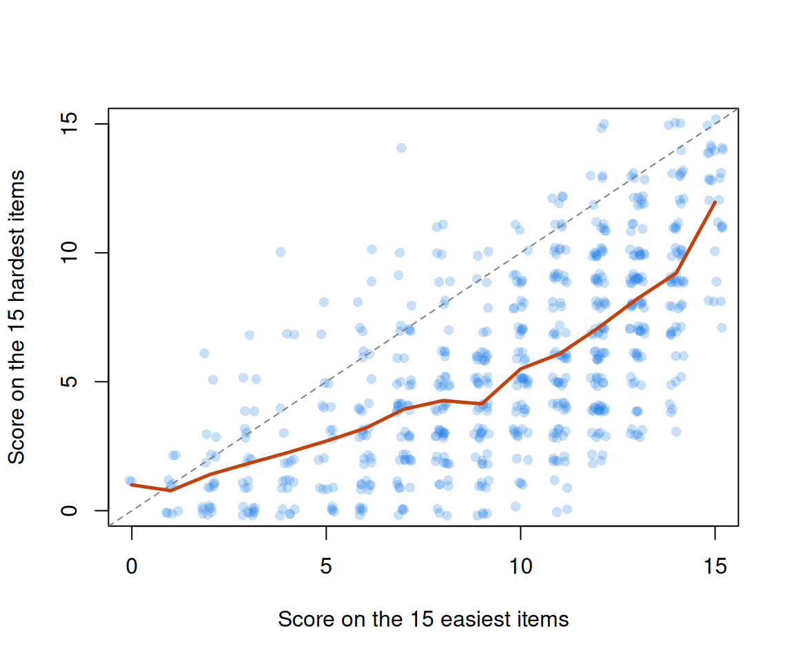

Where CTT breaks: toward item response models
What this is for
Classical test theory and reliability ended on a caveat: CTT is a model for the test score, \(X = T + E\), and says nothing about how anyone answers a single item. For many jobs that is all we need. This lesson looks at two places where it isn’t. The first is alpha. It is computed from item responses, yet the model behind it is silent about items, and a simulation that obeys \(X = T + E\) exactly can put alpha far from the reliability built into it. The second is the items themselves. Plot the proportion correct on each item against the sum score and the curves differ: they rise at different points and at different rates, they bend, and a few don’t rise at all. Swap the sum score in that picture for an unobserved ability and you have the item response model of the next lesson.
Goals
By the end of this lesson you should be able to:
- explain why responses that are coin flips have an alpha near zero, however many items there are;
- explain why alpha depends on assumptions about items that \(X = T + E\) doesn’t make, and show it with a simulation;
- draw item curves (proportion correct against the sum score) and read an item’s difficulty and discrimination from them;
- fit a logistic regression of one item on the sum score and interpret its intercept and slope;
- recognize an item whose curve doesn’t rise with the score, and say what it means for keying and for the sum score;
- say when the sum score and CTT are a reasonable choice.
Core ideas
Coin flips have no reliability
Suppose every response on a test were a coin flip. What would alpha be? Recall the formula: for \(k\) items, \[\alpha = \frac{k}{k-1}\left(1 - \frac{\sum_i \sigma^2_i}{\sigma^2_X}\right)\] (Cronbach, 1951), which for 0/1 items is KR-20 (Kuder & Richardson, 1937). If the flips are independent, the variance of the total is the sum of the item variances, and alpha is about 0, however long the test.
What would it take for alpha to rise? The items would have to share something. So give each respondent a coin of their own. With the last slider at 0, every coin is fair. Move it up and the coins become biased by different amounts, so that some respondents come up “correct” more often than others. A respondent’s coin is now a true score: every item they answer shares it, and it differs from one respondent to the next. The dashed line is the reliability that spread implies; each dot is alpha from one simulated test.
Try it: a test made of coins
With every coin fair, alpha scatters around zero, and some tests come out negative. More items don’t move it off zero; more respondents only narrow the scatter. Now spread the coins. The items share something, each respondent’s bias, and alpha climbs to the dashed line; now more items do raise it, as Spearman–Brown says they should. Reliability needs something shared across items: in a coin test, the respondent’s coin; in a mathematics test, what the student knows.
CTT doesn’t say how item responses arise
If I asked you to simulate item responses that conform to CTT, what would you do? The model tells you how to make totals: draw a true score \(T\), draw an error \(E\), add them. It doesn’t tell you how a total of 20 on a 50-item test comes about: which 20 items, or why those. Nothing in \(X = T + E\) refers to an item (Lord & Novick, 1968; see Guttman’s 1969 review).
So take the model literally. Here is a recipe for a 50-item test that obeys \(X = T + E\) exactly and does nothing more:
- For each respondent, draw a true score \(T\) (mean 25, variance \(\sigma^2_T\)) and an error \(E\) (mean 0, variance \(\sigma^2_E\)), and add them to get the total \(X\). The reliability, \(\sigma^2_T/(\sigma^2_T + \sigma^2_E)\), is whatever we chose.
- Give the respondent \(X\) correct answers on items picked at random, with easier items more likely to be picked, so that the items’ proportions correct spread out as they do on a real test.
Step 1 is the classical model. Step 2 is one way of turning a total into item responses, and CTT has nothing to say against it. What does KR-20 make of the result?
Try it: the recipe
Set the two variances. Each light blue dot is one pair of settings from a grid, run through the recipe once; the orange dot is yours. If KR-20 reported the reliability we built in, every dot would sit on the dashed diagonal.
At the defaults, a true-score variance of 10 and an error variance of 3, the reliability is about 0.75 and KR-20 is close to zero (0.05). Swap them (3 and 10) and the reliability drops to about 0.23 while KR-20 hardly moves (0.11). Now raise both: KR-20 climbs toward 0.9 whatever the reliability, and with a large error variance it lands well above the diagonal (5 and 25: reliability 0.23, KR-20 0.65). Push both variances very low and KR-20 goes far below zero, since the total then varies less than the items do. KR-20 is tracking the sum of the two variances; reliability is their ratio.
The formula says why. KR-20 needs only the item variances and the variance of the total. The recipe fixes the first (the item variances add up to about 12 whatever the settings), and the second is \(\sigma^2_T + \sigma^2_E\). So, roughly, \[\text{KR-20} \approx \frac{50}{49}\left(1 - \frac{12}{\sigma^2_T + \sigma^2_E}\right), \qquad \rho = \frac{\sigma^2_T}{\sigma^2_T + \sigma^2_E}.\] Nothing in the first expression can see how the total splits into true score and error.
How does that square with the lower bound? The proof assumed that item errors are uncorrelated, and the recipe breaks that in two directions. A respondent’s error \(E\) adds or removes correct answers all over the test, so the items share it: positively correlated errors, which push alpha up. And once the total is fixed, a correct answer on one item is one fewer for the others: negatively correlated errors, which push alpha down. With little error variance the second effect wins, and the bound holds but is loose by 0.7 or so. With a lot of error variance the first wins, and alpha is no longer a lower bound at all. \(X = T + E\) allows both, since it makes no claim about items. Sijtsma (2009) argues along related lines that alpha tells us little about how a test’s items hang together.
No student answers a test this way: in the recipe, a student with 40 right is no more likely than one with 20 right to have solved a particular hard item. But CTT doesn’t rule it out. What rules it out is an assumption CTT never writes down: respondents who score higher should be more likely to get each item right.
Item curves against the sum score
How would we check that assumption in real data? We never see anyone’s true score, but we do see their sum score, \(r\). For each sum score, take the respondents with that score and compute the proportion who got a given item right. Plotted against \(r\), those proportions trace an item curve. If higher scorers are more likely to get the item right, it rises. Estimating these curves directly, without a model for their shape, is the business of nonparametric item response theory (Mokken, 1971; Ramsay, 1991; Sijtsma & Molenaar, 2002).
Here are the curves for a mathematics test taken by 664 German fourth graders (data below). Pick an item from the menu. The number beside each item, \(p\), is its proportion correct: the share of all 664 students who got it right, the item’s p-value from Classical test theory and reliability. Items are listed from hardest (smallest \(p\)) to easiest.
Try it: one item against the sum score
Start with MI3, the hardest item: few students below a sum score of 10 get it right, and the curve takes off only in the top third. MA1, the easiest, is high from the start and flattens toward 1. Every curve rises, but where it rises depends on the item: that is difficulty in this picture. Some rise more sharply than others (compare MB4 with MI1). Turn on the straight line: for MA1 it predicts more than 100% correct at the top, for MB4 less than 0% at the bottom. The curves bend, which is why the fitted curve is logistic. Show every item and you see a family of S-shapes, shifted left and right.
Two more features matter later. First, a student with all 30 right got every item right, so every curve ends at exactly 1 (and would start at exactly 0, had anyone scored 0). The sum score contains the item, and near the ends that fixes the answer. Problem 3 swaps in the rest score, the sum of the other items, and The Rasch model meets the same fact when it compares observed and predicted proportions at each sum score. Second, the sum score depends on which items were taken. A student scores more on an easy half of this test than on a hard half, so a sum score doesn’t locate a student until we know the items.
Logistic regression of an item on the sum score
The fitted curve in the widget is that logistic regression, with the sum score where Elo was: \[\Pr(x_{ij} = 1) = \frac{\exp(\beta_{0i} + \beta_{1i}(r_j - \bar r))}{1 + \exp(\beta_{0i} + \beta_{1i}(r_j - \bar r))}.\] Centring the sum score at its mean, \(\bar r\), makes the intercept \(\beta_{0i}\) the log odds of success for a student of average score. Easy items have large intercepts and hard items small ones, so the intercept tracks difficulty. The slope \(\beta_{1i}\) says how sharply the item separates students with lower sum scores from those with higher ones: its discrimination.
That is one step from an item response model. The sum score is an observed stand-in with the problems above: it contains the item, depends on which items were taken, and has error in it. Replace it with an unknown ability \(\theta_j\) for each respondent, fix every slope at 1, and you have the Rasch model; let the slopes differ and you have the 2PL of From the 1PL to the 4PL.
Not every item rises
So far, more of the construct has meant a higher chance of a positive response. For attitudes it needn’t. Consider the statement “I think capital punishment is necessary but I wish it were not” (item WISHNOTNEC in Andrich, 1988; wording as given in the ANDRICH help page of the mudfold package). Someone firmly against capital punishment disagrees; so, plausibly, does someone firmly in favour, who has no such wish. Items that work like this follow an unfolding response process (Coombs, 1964; see Flament’s 1966 review), and they have their own models, the subject of Unfolding models. For CTT they pose a problem that keying can’t solve: an item whose curve rises and then falls is neither forward nor reversed. The data section shows one.
When is CTT enough?
The sum score and alpha each rest on assumptions; the question is whether they hold for the job at hand. The sum score treats items as interchangeable, a reasonable summary when everyone takes the same items, when every item’s curve rises with the construct, and when what we need is one number per respondent. Alpha estimates reliability well when the items’ errors are unrelated and the items measure the true score about equally well. When respondents take different items, when we want to say something about an item rather than the total, or when precision has to vary from one score to another (Information, precision, and short forms), those assumptions carry more weight than CTT can check.
Where does that leave us? When we have a fixed form, taken by everyone, whose item curves all rise, the sum score and reliability may be sufficient for some purposes. Even then, the item curves are worth a look: they take a few lines of code, and they are where an item that doesn’t rise, or rises only at the very top, shows itself. An item response model earns its keep when the design stops being a fixed form or the question stops being about the total.
Simulate
The code below is the widget’s recipe in R: nine settings (three true-score variances crossed with three error variances), five data sets each, plotting the reliability built in against KR-20. It is base R and takes a second or two.
With the seed as written, KR-20 falls below reliability when the error variance is small (true-score variance 25, error variance 5: reliability 0.83, KR-20 0.62) and far above it when it is large (5 and 25: reliability 0.18, KR-20 0.61). The sum_pq column is about 12 in every setting; KR-20 moves with var_X alone. Then try the widget’s default, s2_true = 10 and s2_error = 3 (reliability about 0.77). With n_ppl <- 5000 the points tighten but don’t move toward the diagonal.
With real data
We use two tables; all code is base R (download it).
Code
# IRW tables are long (one row per response); reshape to one row per respondent.
long2wide <- function(df) {
wide <- tapply(df$resp, list(df$id, df$item), function(x) x[1])
as.data.frame(wide[, order(colnames(wide))])
}
# KR-20 (Cronbach's alpha for 0/1 items).
kr20 <- function(resp) {
k <- ncol(resp)
(k / (k - 1)) * (1 - sum(apply(resp, 2, var)) / var(rowSums(resp)))
}
# Correlation of each item with the sum of the *other* items.
item_rest <- function(resp) {
tot <- rowSums(resp)
sapply(names(resp), function(i) cor(resp[[i]], tot - resp[[i]]))
}Items differ, and their curves bend
The main example is 4thgrade_math_sirt, a mathematics test taken by German fourth graders and distributed with the sirt R package (Robitzsch, 2022); its job is to show item curves that rise, bend and differ from item to item. A response is 1 if the answer was correct. The 30 items come from three domains, and most sit in testlets, groups of two to four items built around a shared task (Wainer & Kiely, 1987).
Code
math_url <- "https://redivis.com/api/v1/tables/datapages.item_response_warehouse:v59_0.4thgrade_math_sirt/rows?format=csv"
df <- read.csv(math_url)
head(df)| item | id | resp | testlet | domain | subdomain |
|---|---|---|---|---|---|
| MA1 | 125 | 0 | MA | arithmetic | addition |
| MA1 | 653 | 0 | MA | arithmetic | addition |
| MA1 | 483 | 0 | MA | arithmetic | addition |
| MA1 | 609 | 0 | MA | arithmetic | addition |
| MA1 | 412 | 0 | MA | arithmetic | addition |
| MA1 | 234 | 0 | MA | arithmetic | addition |
Code
resp <- long2wide(df)
c(students = nrow(resp), items = ncol(resp), missing = sum(is.na(resp)))students items missing
664 30 0 Code
# Each item belongs to one domain; most belong to a testlet of 2-4 items.
items <- unique(df[, c("item", "domain", "testlet")])
table(items$domain)
arithmetic geometry Measurement
16 7 7 Every student answered every item.
Code
p <- colMeans(resp)
round(range(p), 2)[1] 0.20 0.89Code
round(sort(p)[c(1, 30)], 2) # the hardest and the easiest item MI3 MA1
0.20 0.89 Code
sprintf("KR-20 = %.2f", kr20(resp))[1] "KR-20 = 0.88"Proportions correct run from 0.20 (MI3) to 0.89 (MA1), and KR-20 is 0.88, close to the 0.90 of the reading test in Classical test theory and reliability. By the usual CTT summaries this test holds together well. Here are the item curves behind the widget.
Code
# For every sum score r, the proportion of students with that score who got each
# item right: a nonparametric item curve.
r <- rowSums(resp)
table(r)[c(1, length(table(r)))] # the lowest and highest scores, and how manyr
1 30
6 2 Code
prop <- aggregate(resp, by = list(r = r), FUN = mean)
n_r <- as.vector(table(r))
show <- c("MA1", "MD2", "MA3", "MG4", "MI3") # five items from easy to hard
op <- par(mar = c(5, 4, 1, 9), xpd = NA) # room on the right for the legend
plot(NULL, xlim = c(0, 30), ylim = c(0, 1), xlab = "Sum score (of 30)",
ylab = "Proportion correct")
for (i in names(resp)) lines(prop$r, prop[[i]], col = "grey85")
cols <- colorRampPalette(c("#93c5fd", "#2780e3", "#c2410c"))(length(show))
for (k in seq_along(show)) lines(prop$r, prop[[show[k]]], col = cols[k], lwd = 2.5)
legend(31.5, 1, sprintf("%s (p = %.2f)", show, p[show]), col = cols, lwd = 2.5, bty = "n")
Code
par(op)
# At the top score every item is right, by construction: the sum contains the item.
round(unlist(prop[prop$r == 30, show]), 2)MA1 MD2 MA3 MG4 MI3
1 1 1 1 1 The five highlighted items all rise, at different places, and at the top score of 30 (two students) every one is at 1, as it has to be.
Code
# Logistic regression of each item on the sum score, centred at the mean score so
# that the intercept is the log odds of success for a student of average score.
rc <- r - mean(r)
fits <- t(sapply(names(resp), function(i) coef(glm(resp[[i]] ~ rc, family = binomial))))
colnames(fits) <- c("intercept", "slope")
fits <- data.frame(p = p, round(fits, 2))
fits[order(fits$p), ][c(1:3, 28:30), ] # the three hardest and three easiest| p | intercept | slope | |
|---|---|---|---|
| MI3 | 0.1972892 | -1.70 | 0.16 |
| MI1 | 0.3298193 | -0.79 | 0.10 |
| MH4 | 0.3328313 | -0.86 | 0.16 |
| MD2 | 0.7500000 | 1.47 | 0.20 |
| MC1 | 0.7665663 | 1.54 | 0.18 |
| MA1 | 0.8855422 | 2.30 | 0.12 |
Code
sprintf("cor(intercept, log odds of p) = %.2f", cor(fits$intercept, qlogis(p)))[1] "cor(intercept, log odds of p) = 0.99"Code
fits[c(which.min(fits$slope), which.max(fits$slope)), ] # flattest and steepest| p | intercept | slope | |
|---|---|---|---|
| MI1 | 0.3298193 | -0.79 | 0.10 |
| MB4 | 0.3524096 | -0.98 | 0.26 |
The centred intercepts line up with the items’ difficulty: they correlate 0.99 with the log odds of each item’s proportion correct. The slopes differ too: MI1 rises by 0.10 on the log-odds scale per point of sum score, MB4 by 0.26. A straight line doesn’t describe these curves:
Code
# The same items with a straight line instead: predictions at the lowest and highest
# possible sum scores.
straight <- sapply(c("MA1", "MB4"), function(i)
predict(lm(resp[[i]] ~ r), data.frame(r = c(1, 30))))
rownames(straight) <- c("r = 1", "r = 30")
round(straight, 2) MA1 MB4
r = 1 0.72 -0.23
r = 30 1.06 0.95For MA1 the line predicts a proportion of 1.06 at a sum score of 30, and for MB4 −0.23 at a sum score of 1. No proportion can do either.
Finally, which items a student takes changes their score:
Code
# The sum score depends on which items were taken. Split the test into its 15
# easiest and 15 hardest items and score each half.
easy <- names(sort(p, decreasing = TRUE))[1:15]
hard <- setdiff(names(resp), easy)
r_easy <- rowSums(resp[easy]); r_hard <- rowSums(resp[hard])
round(c(mean_easy = mean(r_easy), mean_hard = mean(r_hard)), 2)mean_easy mean_hard
9.61 5.70 Code
mean(r_easy > r_hard) # share of students who score higher on the easy half[1] 0.871988Code
hard_given_easy <- tapply(r_hard, r_easy, mean)
plot(jitter(r_easy), jitter(r_hard), pch = 16, col = rgb(0.15, 0.5, 0.89, 0.25),
xlab = "Score on the 15 easiest items", ylab = "Score on the 15 hardest items",
xlim = c(0, 15), ylim = c(0, 15))
abline(0, 1, lty = 2, col = "grey50")
lines(as.numeric(names(hard_given_easy)), hard_given_easy, col = "#c2410c", lwd = 2.5)
Code
round(hard_given_easy[c("5", "10", "15")], 1) 5 10 15
2.7 5.5 12.0 The same 664 students average 9.6 on the easy half and 5.7 on the hard half, and 87% score higher on the easy half. The relationship between the two halves is curved, not a constant shift: students with 5 of the easy items right average 2.7 on the hard ones, and those with all 15 average 12.0. No single constant converts one half’s score into the other’s. Putting scores from different items on one scale needs a model for the items, and that is where The Rasch model begins.
Statements that don’t rise
The contrast is andrich_mudfold: 54 graduate students in an introductory measurement course, each agreeing (1) or disagreeing (0) with eight statements about capital punishment (Andrich, 1988). Its job is to show items whose curves don’t rise with the score. The statements span opinion from strongly against to strongly in favour; we put them in Andrich’s order. With 54 respondents every proportion below is noisy.
Code
mud_url <- "https://redivis.com/api/v1/tables/datapages.item_response_warehouse:v59_0.andrich_mudfold/rows?format=csv"
mud <- long2wide(read.csv(mud_url))
# Andrich's order of the statements, from most against capital punishment to most in favour.
statements <- c("HIDEOUS", "LIFESACRED", "INEFFECTIV", "DONTBELIEV",
"WISHNOTNEC", "MUSTHAVEIT", "DETERRENT", "CRIMDESERV")
mud <- mud[, statements]
c(respondents = nrow(mud), statements = ncol(mud), missing = sum(is.na(mud)))respondents statements missing
54 8 0 Code
round(colMeans(mud), 2) # proportion agreeing with each statement HIDEOUS LIFESACRED INEFFECTIV DONTBELIEV WISHNOTNEC MUSTHAVEIT DETERRENT
0.44 0.65 0.67 0.46 0.48 0.44 0.35
CRIMDESERV
0.35 Unkeyed, a higher total means agreeing with more statements, whatever they say, and KR-20 reflects that:
Code
# Agreement counted as it comes: 1 = agree.
sprintf("KR-20 = %.2f", kr20(mud))[1] "KR-20 = -0.85"Code
round(item_rest(mud), 2) HIDEOUS LIFESACRED INEFFECTIV DONTBELIEV WISHNOTNEC MUSTHAVEIT DETERRENT
-0.39 -0.62 -0.59 0.05 0.25 0.14 -0.06
CRIMDESERV
-0.06 KR-20 is −0.85, far below the zero of the coin flips, because the statements against capital punishment and those in favour pull in opposite directions.
Key so that a higher score means more in favour: reverse HIDEOUS, LIFESACRED and INEFFECTIV, the three statements against. Two statements sit in the middle of Andrich’s order, WISHNOTNEC and DONTBELIEV (“I do not believe in capital punishment but I am not sure it is not necessary”; wording from the same help page). Leave them as they are for now.
Code
# Key so that higher = more in favour: reverse the three statements against.
against <- c("HIDEOUS", "LIFESACRED", "INEFFECTIV")
keyed <- mud
keyed[against] <- 1 - keyed[against]
sprintf("KR-20 = %.2f", kr20(keyed))[1] "KR-20 = 0.85"Code
round(item_rest(keyed), 2) HIDEOUS LIFESACRED INEFFECTIV DONTBELIEV WISHNOTNEC MUSTHAVEIT DETERRENT
0.47 0.73 0.74 -0.09 0.75 0.77 0.68
CRIMDESERV
0.79 Code
flip <- keyed; flip$DONTBELIEV <- 1 - flip$DONTBELIEV
round(item_rest(flip)["DONTBELIEV"], 2) # DONTBELIEV keyed the other wayDONTBELIEV
0.09 Keyed, KR-20 is 0.85, and seven of the eight item-rest correlations are between 0.47 and 0.79. DONTBELIEV is the exception: −0.09 as it stands, 0.09 reversed. Like m19 in the Mach IV, the data can’t say which way to key it; its content, a qualified statement from the middle, suggests why. What do the two middle statements do as attitude changes? Score everyone on the six end statements alone (0 = against on all six, 6 = in favour on all six) and look.
Code
# Score respondents on the six end statements only (0 = against on all six,
# 6 = in favour on all six) and see how the two middle statements behave.
ends <- setdiff(statements, c("DONTBELIEV", "WISHNOTNEC"))
s <- rowSums(keyed[ends])
table(s)s
0 1 2 3 4 5 6
18 10 3 1 9 4 9 Code
g <- cut(s, c(-1, 0, 1, 3, 4, 6), labels = c("0", "1", "2-3", "4", "5-6")) # pool thin cells
rbind(n = table(g), round(sapply(split(mud[c("DONTBELIEV", "WISHNOTNEC")], g), colMeans), 2)) 0 1 2-3 4 5-6
n 18.00 10.0 4.00 9.00 13.00
DONTBELIEV 0.44 0.6 0.75 0.33 0.38
WISHNOTNEC 0.00 0.3 0.75 1.00 0.85Code
# A quadratic term in a logistic regression lets the curve turn over.
round(summary(glm(mud$WISHNOTNEC ~ s + I(s^2), family = binomial))$coefficients, 2) Estimate Std. Error z value Pr(>|z|)
(Intercept) -4.21 1.32 -3.18 0.00
s 3.53 1.22 2.89 0.00
I(s^2) -0.42 0.18 -2.36 0.02Neighbouring scores are pooled where respondents are thin. DONTBELIEV rises from 0.44 among the most opposed to 0.75 in the 2–3 group, then falls back to 0.33 and 0.38: highest in the middle, though the peak rests on four respondents. WISHNOTNEC, the statement on the “in favour” side of the middle, rises from 0 to 1.00 at a score of 4 and then drops to 0.85 among the most in favour. A squared term in a logistic regression is negative (−0.42, standard error 0.18): the fitted curve turns over inside the range. Two respondents out of 13 make that dip, so WISHNOTNEC alone wouldn’t settle it; together with DONTBELIEV and what the statements say, it is what an unfolding process looks like with 54 respondents. A sum score, keyed or not, treats each statement as pointing one way. Unfolding models returns to these data with a model built for them.
Problems
- Coins, on paper. Suppose \(n\) respondents answer \(k\) items and every response is an independent fair coin flip. Show that the population variance of the total equals the sum of the item variances, and hence that KR-20 is approximately zero. Use the coin widget to see how KR-20’s spread depends on \(n\) and \(k\).
- The recipe, narrated. Read
code/ctt-limits-sim.Rand write a paragraph on its logic. Which part of the classical model does it respect exactly? Which assumption behind alpha does it exploit, and which line of code does the exploiting? - Easy, hard and the rest score. In
4thgrade_math_sirt, fit logistic regressions of MA1 and MI3 on the sum score. Compare the intercepts with your sense of each item’s difficulty. Now use the rest score, the sum of the other 29 items, as the predictor. What changes, and why? - Testlets. The math items come in testlets (the
testletcolumn). Compute the average correlation between items in the same testlet and between items in different testlets. What do you find, and what does it imply for alpha, given the first Recall above? (See the IRW local dependence vignette.) - Write an unfolding item. Write one statement about a topic you know well whose agreement should peak in the middle of opinion, and one whose agreement should rise steadily. Sketch the curve you’d expect for each.
- Challenge (open). The item curves in this lesson use the sum score as the x-axis, and the sum score contains the item, depends on which items were taken, and has error in it. What would you need in order to replace it with something measured without error? Write down the properties you’d want, then see how many The Rasch model delivers.
Going further
- Lord, F. M., & Novick, M. R. (1968). Statistical theories of mental test scores. Addison-Wesley. The classical model in full, including what it assumes about items and what it doesn’t. Guttman’s review: https://doi.org/10.1017/s0033312300004622.
- Sijtsma, K. (2009). On the use, the misuse, and the very limited usefulness of Cronbach’s alpha. Psychometrika, 74(1), 107–120. https://doi.org/10.1007/s11336-008-9101-0. Argues that alpha says little about a test’s internal structure, and proposes the greatest lower bound instead.
- Green, S. B., & Hershberger, S. L. (2000). Correlated errors in true score models and their effect on coefficient alpha. Structural Equation Modeling, 7(2), 251–270. https://doi.org/10.1207/S15328007SEM0702_6. What correlated item errors, like the recipe’s, do to alpha.
- Ramsay, J. O. (1991). Kernel smoothing approaches to nonparametric item characteristic curve estimation. Psychometrika, 56(4), 611–630. https://doi.org/10.1007/BF02294494. Smooth item curves estimated without a parametric form, a more careful version of this lesson’s plots.
- Sijtsma, K., & Molenaar, I. W. (2002). Introduction to nonparametric item response theory. Sage. https://doi.org/10.4135/9781412984676. Rising item curves as an assumption you can test, following Mokken (1971).
- Andrich, D. (1988). The application of an unfolding model of the PIRT type to the measurement of attitude. Applied Psychological Measurement, 12(1), 33–51. https://doi.org/10.1177/014662168801200105. The capital-punishment statements, and a model for them.
- Wainer, H., & Kiely, G. L. (1987). Item clusters and computerized adaptive testing: A case for testlets. Journal of Educational Measurement, 24(3), 185–201. https://doi.org/10.1111/j.1745-3984.1987.tb00274.x. Where the testlet idea comes from (problem 4).
- IRW vignette: local dependence. How often items in IRW tables share more than the construct.
- Sijtsma, K., & Molenaar, I. W. (2016). Mokken models. In W. J. van der Linden (Ed.), Handbook of item response theory: Vol. 1. Models (pp. 303–321). Chapman and Hall/CRC. https://doi.org/10.1201/9781315374512. A handbook chapter on Mokken’s nonparametric item response models.
Data sources
Data from the Item Response Warehouse (each table name links to its IRW page); references from IRW biblio.
4thgrade_math_sirt: Robitzsch A (2022). sirt: Supplementary Item Response Theory Models. R package version 3.12-66, https://CRAN.R-project.org/package=sirt. https://cran.r-project.org/web/packages/sirt/index.html. Licence: GPL-3.0.andrich_mudfold: Andrich, D. (1988). The application of an unfolding model of the PIRT type to the measurement of attitude. Applied psychological measurement, 12(1), 33-51. https://doi.org/10.1177/014662168801200105. Licence: GPL-3.0.
For instructors
- Source: EDUC 252 class 2 (slides c2, “Limitations of alpha” through “Looking ahead to next week”, including the closing question of how you would simulate item responses that conform to CTT) and problem set 2 (#4, “CTT failures”, and #5, “Towards IRT models”); code in
ben-domingue/252:ps2/ctt_failures.R,ps2/towards_irt.R. - Timing: the core ideas and widgets take about 45 minutes; the two real-data analyses work as a 30-minute lab.
- Changed from 252: PS2#4 was a guided tour for students to narrate; here the recipe is the lesson’s main argument, as a widget and in Simulate, and the lesson adds the settings where KR-20 overshoots reliability. PS2#5 used
chess_lnirt; this lesson uses4thgrade_math_sirt, since chess is the main example in the neighbouring lessons. The unfolding analysis keys the six end statements and looks at the two middle ones against that score, rather than against the unkeyed total. - Reuse:
andrich_mudfoldreturns in Unfolding models, where a model built for single-peaked curves is fit to it. - Item text: two of Andrich’s (1988) eight statements are quoted, WISHNOTNEC and DONTBELIEV, from the mudfold package documentation; the others are named by their item codes.
- Solutions: held back in
solutions/ctt-limits.qmd(not published). Problem 6 is open.